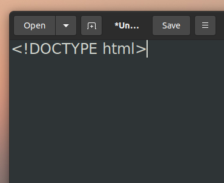
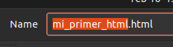
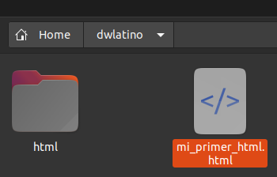

Tu primer documento HTML
Lo primero que necesitarás para crear un documento de HTML es un editor de texto.
Con editor de texto no me refiero a un software como "Word" o "LibreOffice", sino
más bien a una aplicación diseñada para guardar archivos en extensiones ".html".
Puedes descargar aplicaciones como "VSCODE", "Sublime Text", o "Brackets", que te
asistirán para escribir código más rápido. Sin embargo, puede crear documentos
HTML con programas sencillos como "Notepad" (PC), "TextEdit" (Mac) o "gedit" (linux).
Una vez que actives el editor de texto, escribe <DOCTYPE html> en
la primera línea.

Cuida de escribir las palabras manteniendo su formato en mayúscula y minúscula
de acuerdo sea el caso.
Cuando presiones el comando o botón de guardado,
deberás escribir el nombre de tu primer archivo seguido de un
punto y la palabra "html" sin espacio entre éstos últimos.

Al guardar el archivo, habrás creado tu
primer documento de HTML y estarás casi listo para comenzar a
programar.
Lo último que haremos en esta sesión será crear una carpeta en tu ubicación
de preferencia y mover el archivo que guardaste a esta carpeta.
Esto será muy importante para importar archivos a la página y navegar con
facilidad entre sus partes.

En la próxima página comenzaremos a escribir código en HTML
y a construir nuestra primera web.